VS Code Agents Window (Preview)
A dedicated VS Code window where chat is the primary interface.
Works across all your workspaces from one window.
Assign high-level tasks, evaluate outcomes, run & track multiple agents in parallel .
Optimized for agent-first workflows.
Source: code.visualstudio.com/docs/agents/run/agents-window
Welcome. This is the VS Code Agents Window, currently in Preview. It is a dedicated window where chat is the primary interface, not the editor. It spans all your workspaces, so you can hand off high-level tasks, review results, and run multiple agents in parallel. Everything here mirrors the official docs.
Why use it — Orchestrate across projects
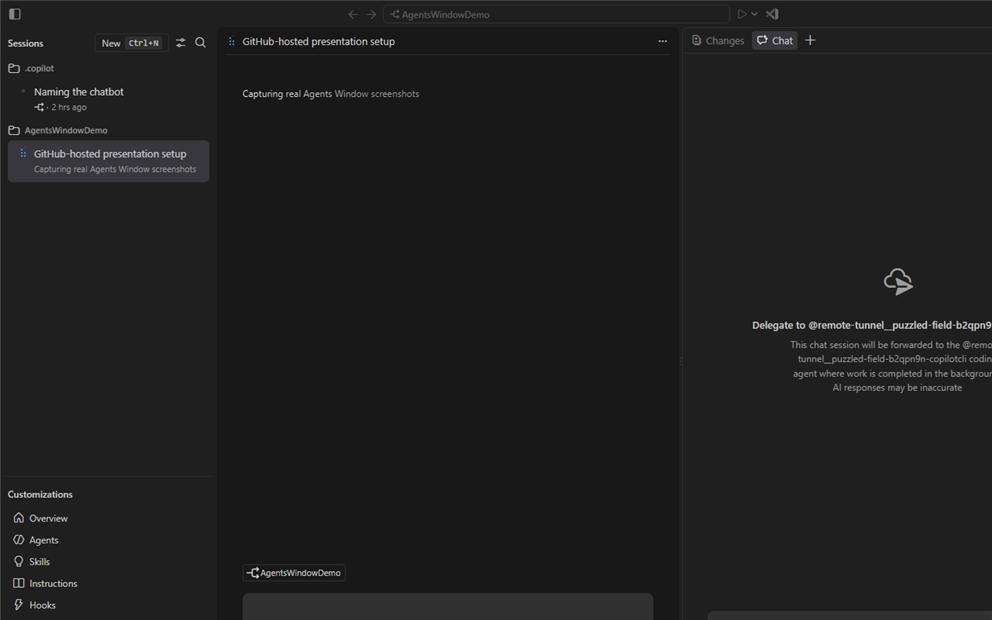
One window, many workspaces
Manage sessions for all your workspaces without opening each in a separate window — assign & track work across projects at once.
First benefit: orchestration. Instead of one window per project, you manage sessions for every workspace from this one window. Assign and track work across projects at the same time.
Why use it — Work agent-first, not code-first
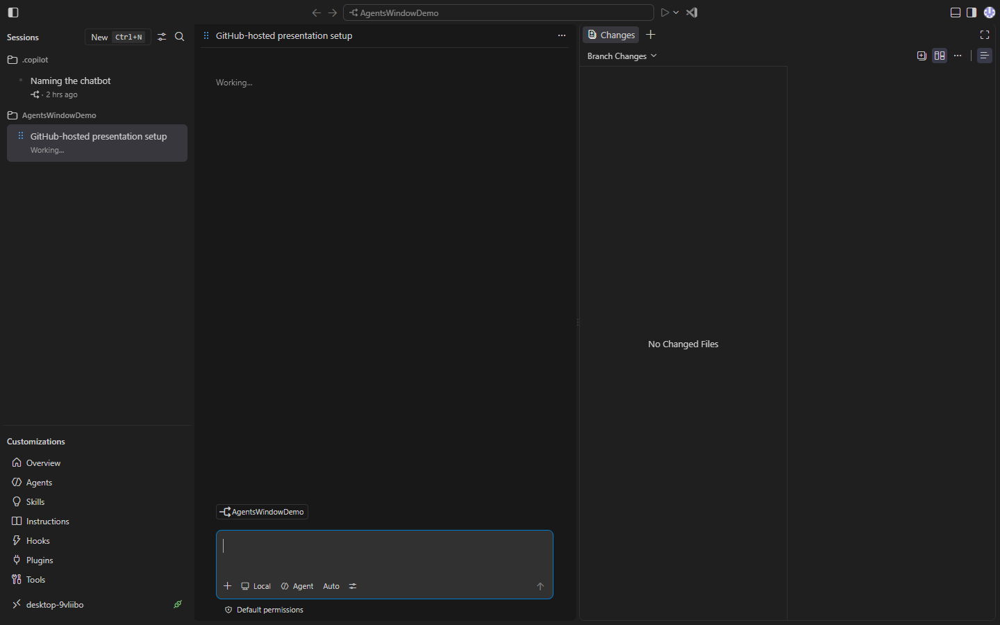
Describe the outcome you want
Describe the outcome you want in high-level requirements and let the agent figure out the implementation — not prompts framed around specific code changes.
Second benefit: agent-first thinking. You describe the outcome, what you want, and the agent figures out the implementation. You are not writing prompts about specific code edits.
Why use it — Switch freely between surfaces
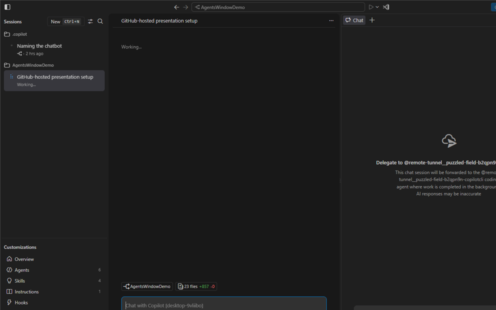
Move to Chat view anytime
Both surfaces share the same sessions, settings, and keybindings — so you never lose context when you get closer to the code.
Third benefit: you are never locked in. Jump to the Chat view whenever you want to get closer to the code. Sessions, settings, and keybindings are shared, so context is never lost.
Open the Agents window
Frame 1 of 6 — method 1
To open it, the simplest path is the Open in Agents button in the title bar of your main editor window. The opened window is annotated 1–5: 1 — the New session button, to start a session; 2 — the Customizations panel; 3 — the Chat area; 4 — the Changes panel; 5 — the Files panel. These five areas are detailed in the interface overview that follows.
Open the Agents window
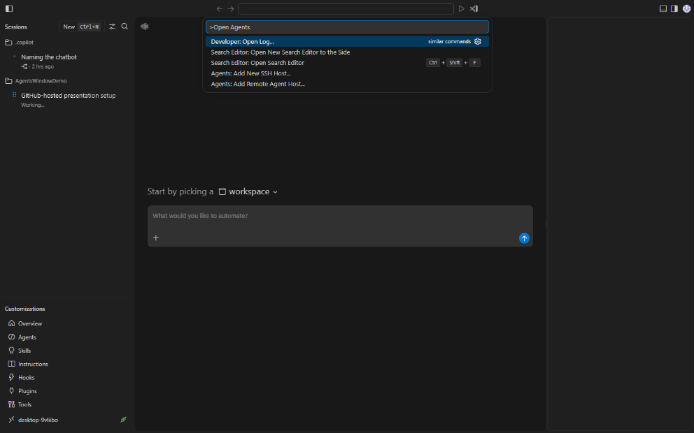
Ctrl+Shift+P → Chat: Open Agents Window
Frame 2 of 6 — method 2
Or the Command Palette: Ctrl+Shift+P, then Chat: Open Agents Window.
Open the Agents window
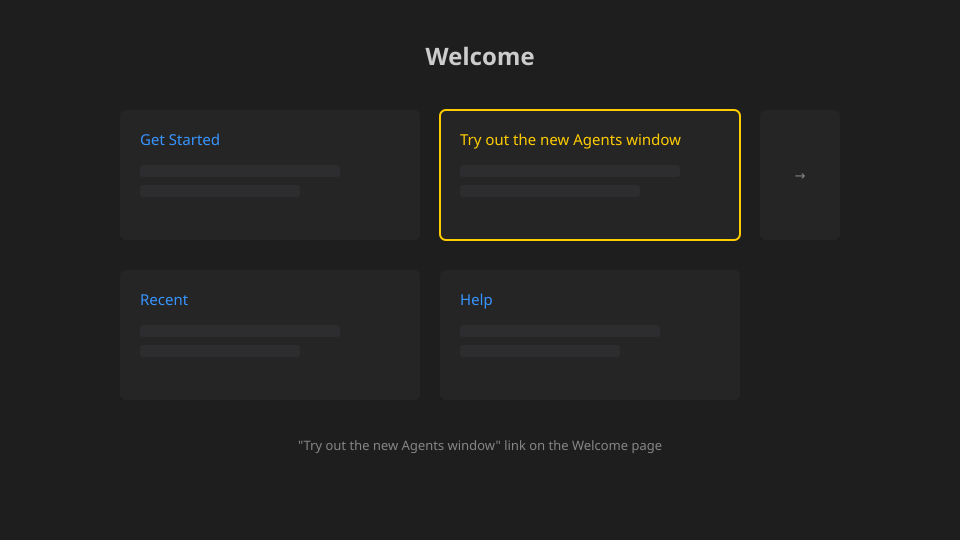
Select the welcome link
Frame 3 of 6 — method 3
Or from the Welcome page, the Try out the new Agents window link.
Open the Agents window
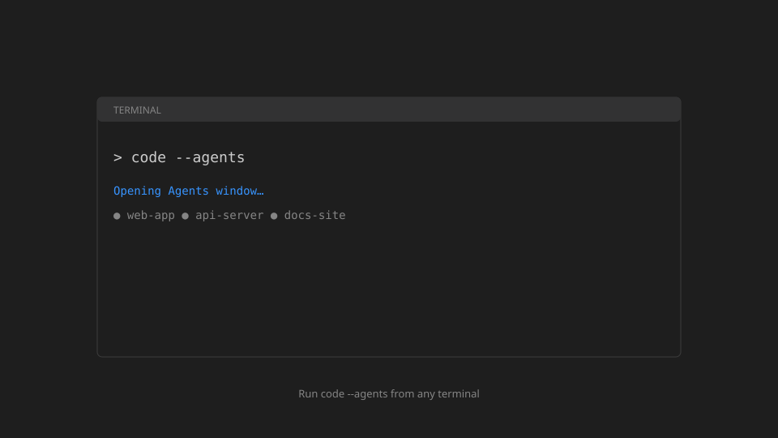
Run code --agents
Frame 4 of 6 — method 4
Or from a terminal: code --agents.
Open the Agents window
insiders.vscode.dev/agents
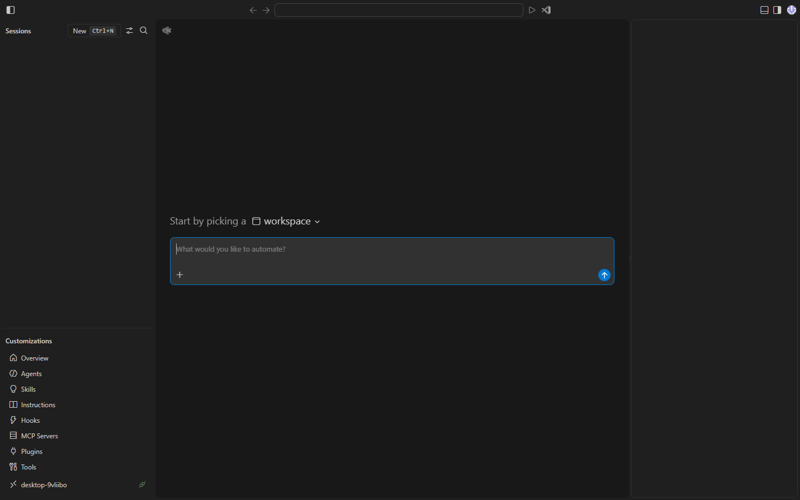
Open in any browser
Frame 5 of 6 — method 5 (remote)
Or in a browser at insiders.vscode.dev/agents, useful from any device.
Result — dedicated Agents window opens
How it helps
One window dedicated to agents — no context switch.
Already signed in if GitHub is connected in VS Code.
Opens alongside your main editor window.
Whichever path you use, you get a dedicated Agents window. If you are already signed into GitHub in VS Code, you are signed in here too. No context switching between editor and agent.
Interface overview — Sessions list
View & manage sessions across workspaces (grouped by workspace by default).
The Sessions list, on the left. All your sessions across workspaces, grouped by workspace by default. Select one to make it active.
Interface overview — Customizations panel
Access agent customizations for your workflow & preferences.
Below it, the Customizations panel: your agents, skills, instructions, hooks, and MCP servers.
Interface overview — Chat area
View & interact with the active agent chat conversation.
Center: the Chat area, your conversation with the active agent.
Interface overview — Changes panel
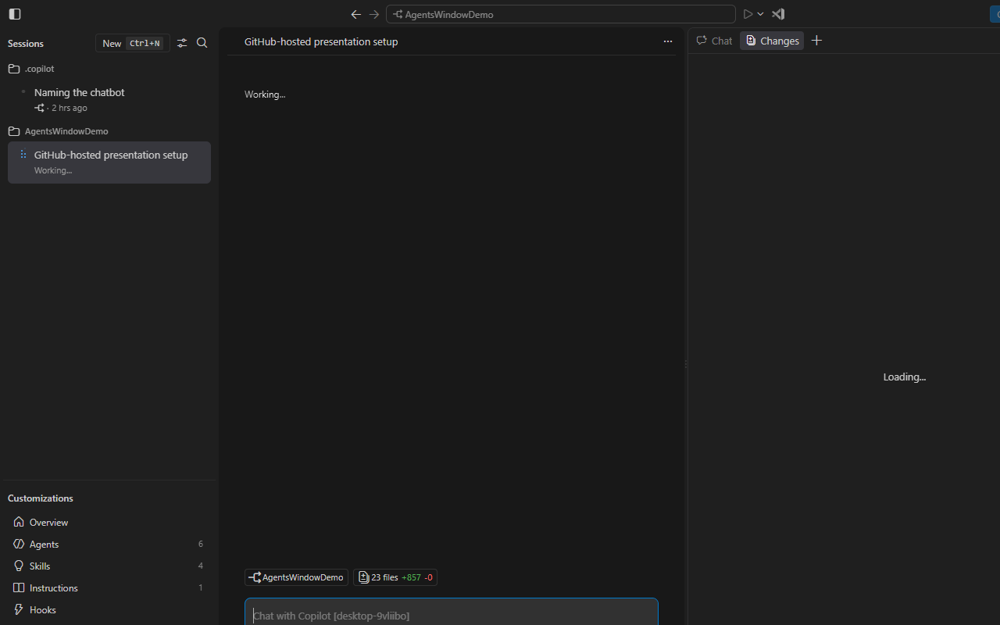
Changes panel
Review changes for the active session.
The Changes panel: review what the agent changed for the active session.
Interface overview — Files panel
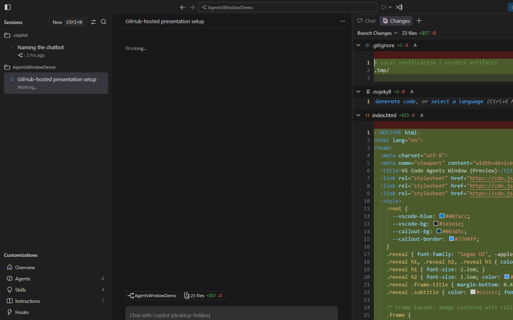
Files panel
Browse the workspace associated with the active session.
And the Files panel: browse the workspace tied to the active session.
Result — five areas, one workflow
What each area is for
Sessions list — manage sessions across workspaces.Customizations — agents, skills, instructions, hooks, MCP.Chat — talk to the active agent.Changes — review edits & Git actions.Files — browse the session workspace.
Quick recap of the five areas: Sessions list to manage, Customizations to configure, Chat to talk, Changes to review, Files to browse. One coherent surface.
Understand the active session
The active session has focus; its context drives what you see and which workspace your actions apply to.
The active session is the one in focus. Click it in the list and everything else reorients to it.
Result — window updates to that session
How it helps
Chat, Files, Changes, Terminal, Tasks & Browser update to the selected session.
Active session is highlighted in the list.
Focus one project at a time — no mix-ups.
When the active session changes, Chat, Files, Changes, Terminal, Tasks, and Browser all update to that session. The active one is highlighted. You focus one project at a time.
Start an agent session — New
Frame 1 of 5
Starting a session: hit New, or Ctrl+N.
Start an agent session — pick workspace
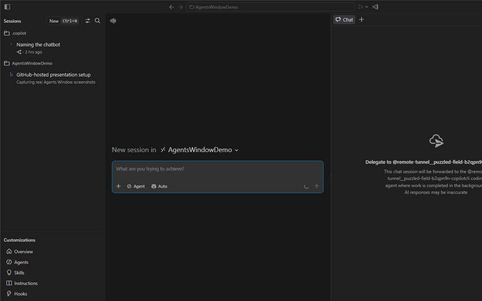
Choose workspace
Frame 2 of 5
Pick a workspace: local folder, GitHub repo, or remote via SSH or dev tunnel. Or hover a workspace and click the plus.
Start an agent session — choose harness
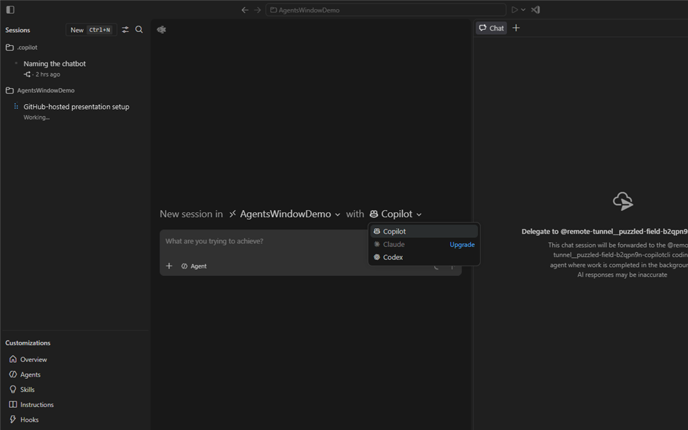
Choose harness
Frame 3 of 5
Choose a harness: Copilot, Claude, or Codex. Availability depends on the workspace type.
Start an agent session — type prompt
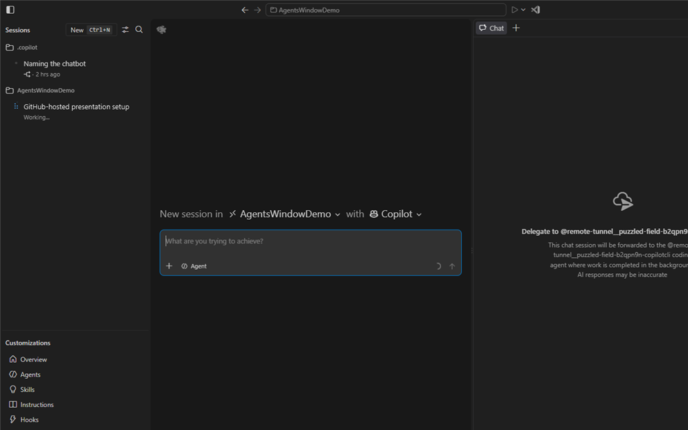
Type prompt + Enter
Frame 4 of 5
Describe what you want and press Enter. Optionally set the model, permissions, and isolation mode first.
Result — agent works live
How it helps
Agent responds in chat; Files & Changes update live.
Run in background with Alt+Enter — keep current session.
Switch away and return to check progress or reply.
The agent works live: Files and Changes update as it goes. Alt+Enter runs it in the background so you stay in your current session. Come back anytime to check progress or answer a question.
Start a quick chat — + on Chats
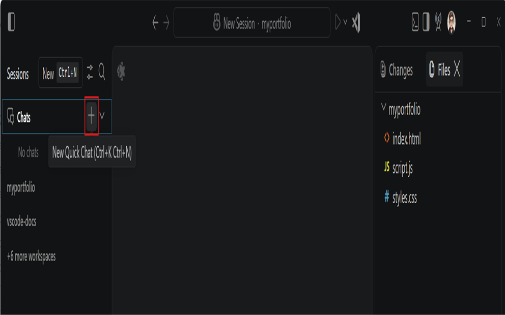
+ on Chats (Ctrl+K Ctrl+N)
Frame 1 of 4
Quick chats: click the plus on the Chats header, or Ctrl+K Ctrl+N. These are not tied to a workspace.
Start a quick chat — choose harness
Frame 2 of 4
Pick a harness from the dropdown.
Start a quick chat — type prompt
Frame 3 of 4
Type your prompt. Great for throwaway questions.
Result — lightweight, workspace-free chat
How it helps
Not scoped to a workspace — ask anything.
Appears in the Chats group, separate from sessions.
Great for one-off questions or tasks.
Quick chats live in the Chats group, separate from workspace sessions. Perfect for one-off asks that do not belong to a project.
Review — select Files / Changes
Frame 1 of 3
When the agent is done, review. Select Files or Changes for the active session.
Review — pick a diff
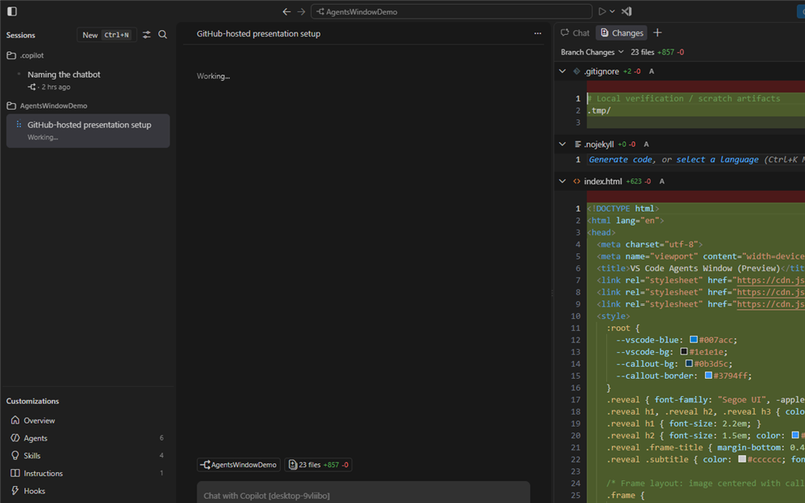
Open a changed file
Frame 2 of 3
Open a changed file to see the diff. Use the dropdown to scope: branch, uncommitted, all, or last agent turn.
Result — review diffs & give feedback
How it helps
Review diffs; use the dropdown for branch / uncommitted / all / last turn.
Select a block to leave range-based feedback for the agent.
Catch issues before they land.
Select a block of text in the diff to leave range-based feedback for the agent. Catch issues before they merge.
Review — leave a comment on a diff
Frame 1 of 2
Highlight a block of code in the diff and choose Add comment to leave range-based feedback for the agent — tied to that exact line range.
To leave feedback, select a block of code in the diff and pick Add comment. The comment is range-based: it points at the exact lines, so the agent knows precisely what to change.
Review — send all comments to the agent
Frame 2 of 2
When you are done, use Send feedback in the Changes view to bundle every comment you left and push it back to the agent as one review.
Once you have left all your comments, hit Send feedback in the Changes view. Every comment you made is collected and sent to the agent as a single review, so nothing is lost.
Validate locally — browser & tasks
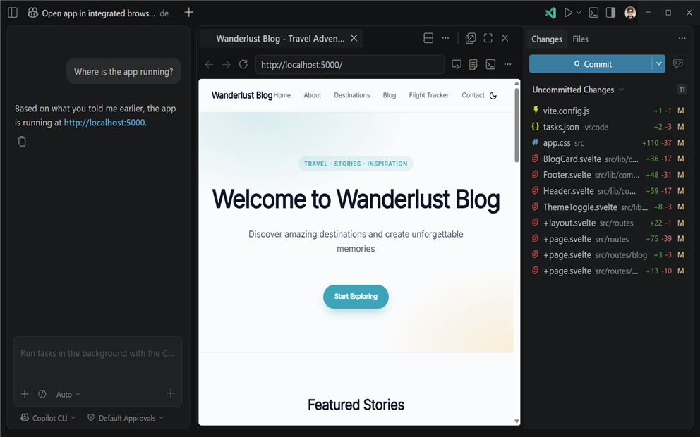
Open Integrated Browser / Add Task
Frame 1 of 2
Validate locally before committing. Open a localhost link in the integrated browser, or add a Task to run build or tests.
Result — verify it doesn't break
How it helps
Open localhost in the integrated browser to verify UI.
Add a Task (build/test) to run in the session context.
Start a dev server to confirm running behavior.
Tasks run in the session context: run a build, tests, or a dev server to confirm nothing breaks.
Commit changes
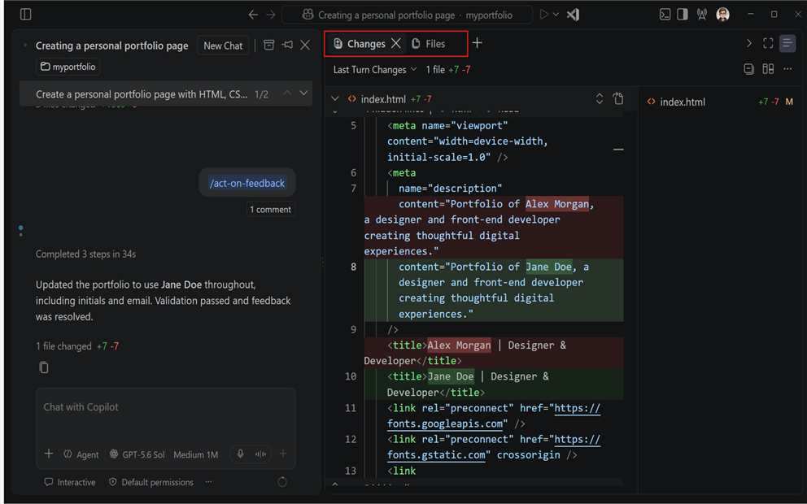
Commit Changes
Frame 1 of 2
Ready? Hit Commit Changes in the Changes view.
Result — auto commit message
How it helps
VS Code generates a commit message from the changes.
Commits all current changes in one action.
Optional Commit and Sync Changes per session type.
VS Code writes the commit message from the diffs and commits everything. Some sessions also offer Commit and Sync.
Work with multiple sessions
Open to the Side / drag / Alt+click
Frame 1 of 2
Work with several at once: Open to the Side, drag a session into the view, or Alt+click.
Result — compare & manage in parallel
How it helps
Compare results; Ctrl+1..9 to focus by grid position.
Pin a session view so it isn't replaced.
Work across projects without losing focus.
Compare results side by side. Ctrl+1 through Ctrl+9 focus sessions by grid position. Pin a view so it is not replaced. Parallel work without losing focus.
Customize & configure
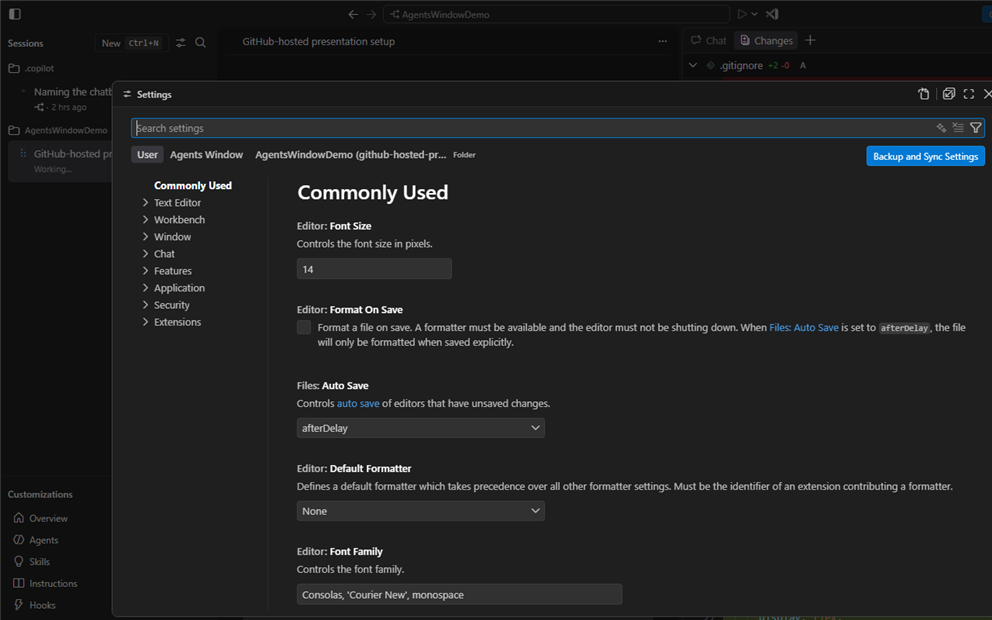
Customizations panel / settings scope
Frame 1 of 2
Customize via the Customizations panel or settings. Note the scope: settings can be overridden just for the Agents window.
Result — your config carries over
How it helps
Manage agents, skills, instructions, hooks, MCP, plugins.
Settings carry over; override per window via scope.
Opt extensions in with extensions.supportAgentsWindow.
Your agents, skills, instructions, hooks, MCP, and plugins carry over. Settings inherit but can be overridden per window. Opt extensions in with extensions.supportAgentsWindow.